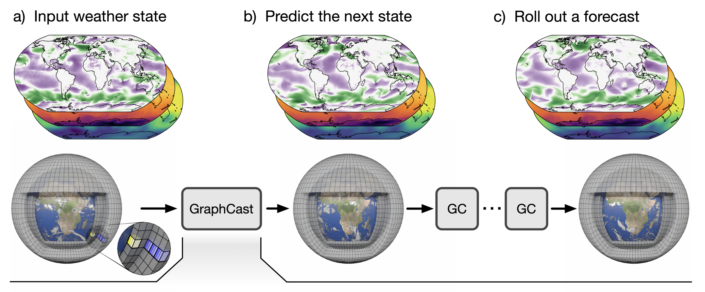
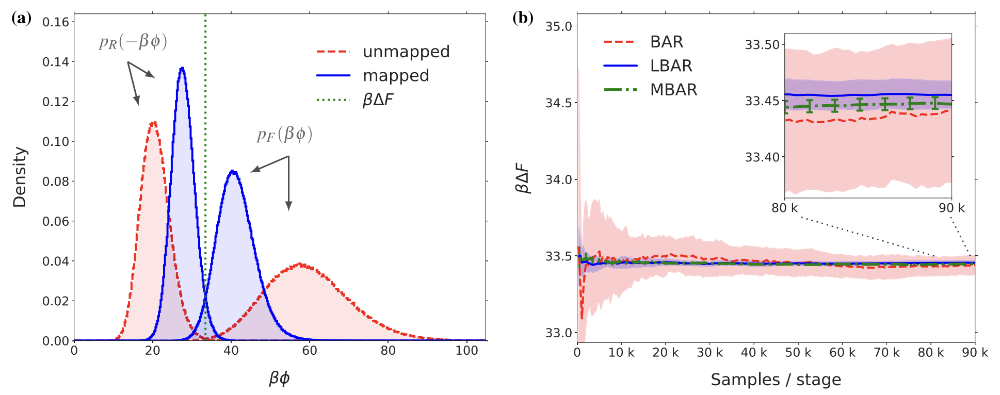

[Paper] GraphCast: Learning skillful medium-range global weather forecasting
Published on the
arXiv

Posted on 2 October, 2023
[Paper] Targeted free energy estimation via learned mappings
Selected as a featured article by
JCP.

Posted on 31 October, 2020
Promotion to Senior Research Scientist
Posted on 12 October, 2020
Dr Peter Wirnsberger
Here is a link to my
PhD Thesis.
Posted on 20 October, 2018
I won a Microsoft Azure Research Award
Microsoft will support my research for an entire year by providing me with access
to their cloud computing service
Azure.
Posted on 30 November, 2017
We won the Microsoft Hackathon
Our team is one of the global winners of this year's Microsoft Hackathon with more
than 18,000 participants worldwide.
Posted on 31 August, 2017
[Paper] Non-equilibrium simulations of thermally induced electric fields in water
Posted on November 17, 2016